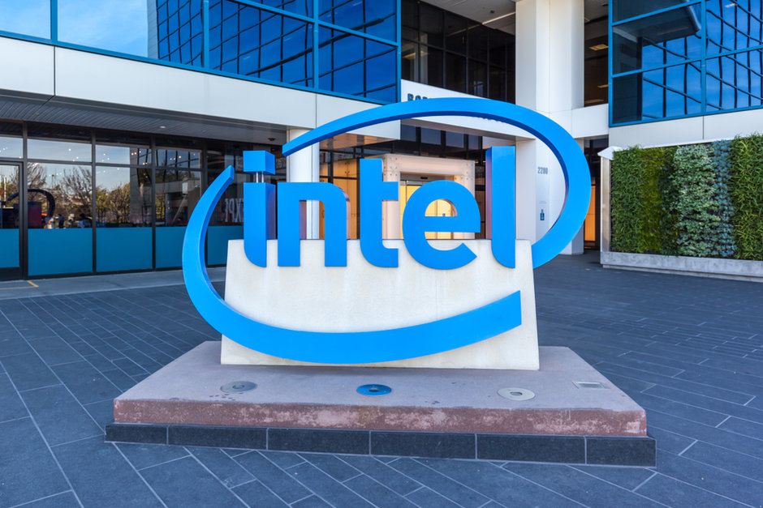
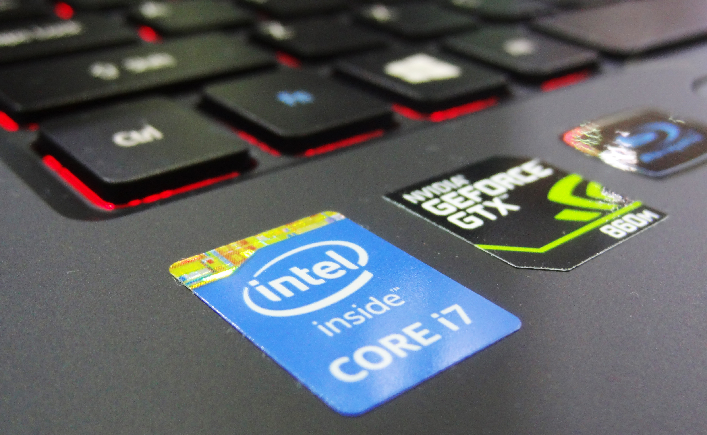
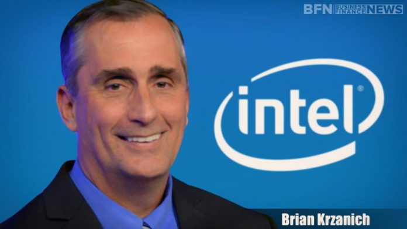
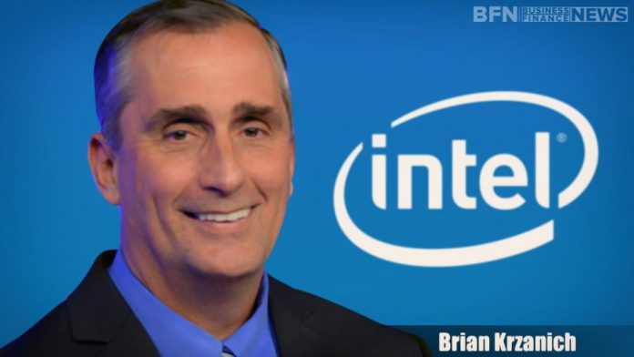
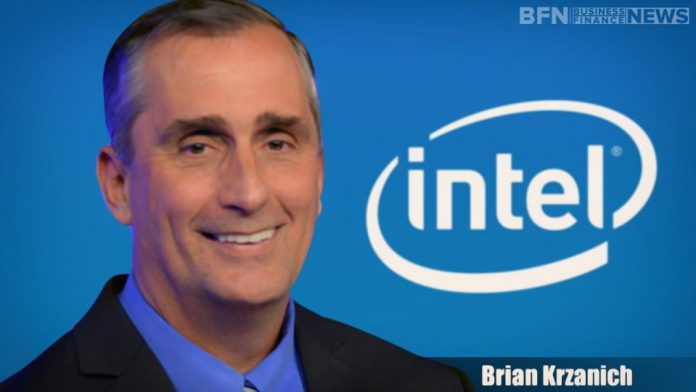

Intel Corporation is the world's largest manufacturer of semiconductor circuits and other devices.
The company's headquarters are in Santa Clara, California, USA, in a location called Silicon Valley.
The entire headquarters of Intel is composed of a complex of several buildings, headquartered in a building named after the founder of the company, Robert Noyce.
Intel headquarters also features a microprocessor museum.


Over 96,500 employees work for Intel worldwide.
As one of the world's largest companies with an annual turnover of $ 37.6 billion (2008) and $ 127 billion (June 8, 2006), the company is listed on many global exchanges.
Intel is known among ordinary people primarily for its processors. They produce over 100 million annually, about 75% of the world's x86 processor production (2000).
In addition to personal computer processors, it manufactures PDA processors, chipsets, flash memory, telecom chips, and home media multimedia (children's electronic microscopes and web cameras).
Violation of competition rules in the European Union.
The company was founded by Robert Noyc, Gordon Moore (famous for his Moore Law), Arthur Rock and Max Palevsky in 1968 under the original name of Integrated Electronics Corporation.
Moore and Noyce came from Fairchild Semiconductor and became the first employees. Rock was not an employee but an investor. The total initial investment was $ 2.5 million of convertible bonds and $ 10,000 from Arthur Rock. Only 2 years later, Intel completed its first IPO offering $ 6.8 million ($ 23 per share).
Intel's third employee, Andy Grove, was originally a chemical engineer who later managed the company for much of the 1980s and 1990s.
Major competitors
Competitors in PC chipsets include Advanced Micro Devices, VIA Technologies, Silicon Integrated Systems, and Nvidia. Intel's competitors in networking include NXP Semiconductors, Infineon, Broadcom Limited, Marvell Technology Group and Applied Micro Circuits Corporation, and competitors in flash memory include Spansion, Samsung, Qimonda, Toshiba, STMicroelectronics, and SK Hynix.
The only major competitor in the x86 processor market is Advanced Micro Devices (AMD), with which Intel has had full cross-licensing agreements since 1976: each partner can use the other's patented technological innovations without charge after a certain time. However, the cross-licensing agreement is canceled in the event of an AMD bankruptcy or takeover.
Some smaller competitors such as VIA Technologies produce low-power x86 processors for small factor computers and portable equipment. However, the advent of such mobile computing devices, in particular, smartphones, has in recent years led to a decline in PC sales. Since over 95% of the world's smartphones currently use processors designed by ARM Holdings, ARM has become a major competitor for Intel's processor market. ARM is also planning to make inroads into the PC and server market.

Leadership
Robert Noyce was Intel's CEO at its founding in 1968, followed by co-founder Gordon Moore in 1975. Andy Grove became the company's president in 1979 and added the CEO title in 1987 when Moore became chairman. In 1998, Grove succeeded Moore as Chairman, and Craig Barrett, already company president, took over. On May 18, 2005, Barrett handed the reins of the company over to Paul Otellini, who had been the company president and COO and who was responsible for Intel's design win in the original IBM PC. The board of directors elected Otellini as President and CEO, and Barrett replaced Grove as Chairman of the Board. Grove stepped down as chairman but is retained as a special adviser. In May 2009, Barrett stepped down as chairman of the Board and was succeeded by Jane Shaw. In May 2012, Intel vice chairman Andy Bryant, who had held the posts of CFO (1994) and Chief Administrative Officer (2007) at Intel, succeeded Shaw as executive chairman.
In November 2012, president and CEO Paul Otellini announced that he would step down in May 2013 at the age of 62, three years before the company's mandatory retirement age. During a six-month transition period, Intel's board of directors commenced a search process for the next CEO, in which it considered both internal managers and external candidates such as Sanjay Jha and Patrick Gelsinger. Financial results revealed that, under Otellini, Intel's revenue increased by 55.8 percent (US$34.2 to 53.3 billion), while its net income increased by 46.7% (US$7.5 billion to 11 billion).
On May 2, 2013, Executive Vice President and COO Brian Krzanich was elected as Intel's sixth CEO,a selection that became effective on May 16, 2013, at the company's annual meeting. Reportedly, the board concluded that an insider could proceed with the role and exert an impact more quickly, without the need to learn Intel's processes, and Krzanich was selected on such a basis. Intel's software head Renée James was selected as president of the company, a role that is second to the CEO position.
As of May 2013, Intel's board of directors consists of Andy Bryant, John Donahoe, Frank Yeary, Ambassador Charlene Barshefsky, Susan Decker, Reed Hundt, Paul Otellini, James Plummer, David Pottruck, and David Yoffie and Creative director will.i.am. The board was described by former Financial Times journalist Tom Foremski as "an exemplary example of corporate governance of the highest order" and received a rating of ten from GovernanceMetrics International, a form of recognition that has only been awarded to twenty-one other corporate boards worldwide.
On June 21, 2018, Intel announced the resignation of Brian Krzanich as CEO, with the exposure of a relationship he had with an employee. Bob Swan was named interim CEO, as the Board began a search for a permanent CEO.
On January 31, 2019, Swan transitioned from his role as CFO and interim CEO and was named by the Board as the 7th CEO to lead the company.

 
Leadership

Leadership